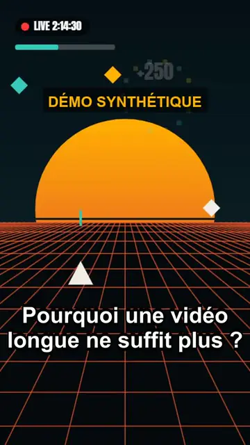
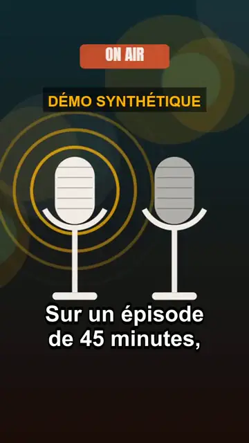
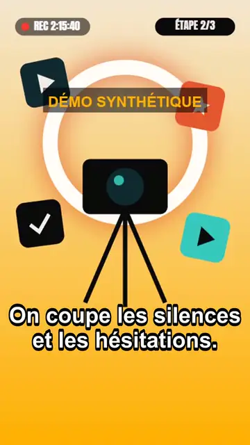

À l'affiche · portfolio
Ce que nous montons, sans mélange.
Trois rubriques bien séparées : nos réalisations pour de vrais créateurs, nos démonstrations synthétiques, et les Shorts d'autres créateurs qui nous servent de références.
01 · Réalisations GUIZCUT
Nos montages pour de vrais créateurs.
Uniquement des clips montés par GUIZCUT à partir de vidéos confiées par des créateurs, publiés avec leur accord écrit et celui des personnes filmées.
Aucune réalisation publiée pour le moment. Les premières séances pilotes sont en cours : leurs clips n'apparaîtront ici qu'après l'accord écrit des créateurs.
02 · Démonstrations
Notre chaîne, sur une source synthétique.
Trois clips produits par notre chaîne de montage à partir d'une vidéo synthétique de 2 minutes : aucune personne filmée, aucun client. Ils montrent le format livré : 9:16, une idée par clip, sous-titres incrustés. Démonstrations sans son.

Démo synthétique
Démo synthétique
Démo synthétique03 · Références externes
Trois Shorts qui nous guident.
Des Shorts publiés par des créateurs français, choisis pour illustrer les formats que nous montons : jeu et face-cam, extrait de podcast, divertissement. Ce ne sont pas des réalisations GUIZCUT ni des clients. Ils se lisent dans le lecteur officiel de YouTube, chargé seulement quand vous lancez la vidéo.
-
Référence · YouTube
 Lire le Short « OHHH LA DINGUERIE » de GOTAGA (lecteur YouTube)
Lire le Short « OHHH LA DINGUERIE » de GOTAGA (lecteur YouTube)
Gaming & Streams
OHHH LA DINGUERIE
- Chaîne
- GOTAGA
- Durée
- 31 s · publié en septembre 2026
- À retenir
- Face-cam au-dessus du jeu, réaction en direct, titre incrusté lisible.
Référence externe : Short publié par GOTAGA sur YouTube. Non réalisé par GUIZCUT, sans lien commercial.
-
Podcast
Philippe Boxho, médecin légiste : peut-on mourir de peur ?
- Chaîne
- LEGEND
- Durée
- 57 s · publié en septembre 2024
- À retenir
- Une question en accroche, un invité cadré serré, sous-titres mot à mot.
Référence externe : Short publié par LEGEND sur YouTube. Non réalisé par GUIZCUT, sans lien commercial.
-
Référence · YouTube
 Lire le Short « Un objet pour creuser un trou ? » de JOYCA (lecteur YouTube)
Lire le Short « Un objet pour creuser un trou ? » de JOYCA (lecteur YouTube)
Divertissement
Un objet pour creuser un trou ?
- Chaîne
- JOYCA
- Durée
- 42 s · publié en novembre 2023
- À retenir
- Plateau de jeu tourné en vertical, lumière de cinéma, sous-titres stylisés.
Référence externe : Short publié par JOYCA sur YouTube. Non réalisé par GUIZCUT, sans lien commercial.

Lecture via YouTube en mode confidentialité renforcée (youtube-nocookie.com), uniquement après votre clic. Confidentialité
Fiche technique
Ce que contient chaque clip.
- Format
MP4 vertical
H.264, 1080 × 1920, 30 images/s, son AAC. Prêt pour TikTok, Reels et Shorts.
- Durée
30 à 60 secondes
Une idée par clip, avec une ouverture et une chute franches.
- Texte
Sous-titres incrustés
Lisibles sans le son, relus avant livraison.
- Son
Volume normalisé
Niveau homogène d'un clip à l'autre, vérifié automatiquement.
Votre vidéo, notre salle de montage
Envie du même format ?
Séance pilote : 3 clips pour 29 € HT, vidéo source jusqu'à 45 min.